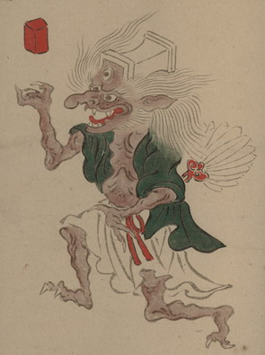

枕の化物。頭が枕になっており、額に3つめの目が付いている。鼻が長く、白い頭髪を長く伸ばしている。緑色の着物を羽織り、腰に白い衣をまとっている。腰のあたりに白い羽扇をさしている。差し上げた右手の上に、赤い角材のようなものが浮いている。手足の爪は鋭い。
出典：親書誌：U426_nichibunken_0154：妖怪絵巻；ヨウカイエマキ／日付：2010／資源識別子：U426_nichibunken_0154_0069_0000
Copyright (c)2010- International Research Center for Japanese Studies, Kyoto, Japan. All rights reserved.